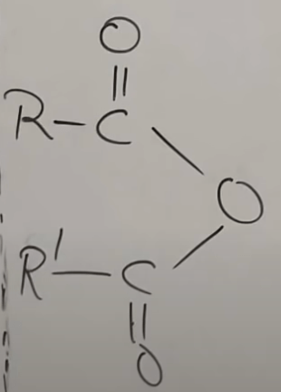

IUPAC Nomenclature : Functional Groups with Secondary Suffix
(You Tube Playlist Link)
- Some Basic Principles and Naming Of Alkanes
- Complex Substituents and Cycloalkanes
- Naming Of Alkenes and Alkynes
- Functional Groups with Secondary Suffix
- Naming Of Alcohols
- Naming Of Aldehydes and Ketones
- Naming of Carboxylic Acids and Acid Halides
- Naming Of Acid Amides and Esters
- Naming of Cyanides, Amines, and Ethers
- Naming of Polyfunctional Compounds (More than One Functional Group)
- Naming Of Aromatic Compounds - Benzene Rings
- Naming Of Bicyclo and Spiro Compounds
-
Introduction to functional groups
- Functional groups are atoms or group of atoms that give all physical as well as chemical properties to a compound.
- Functional Groups come as secondary suffix in a compound.
- Terminal Function Group (TFG) is the FG at the end of a carbon chain - ex: Acohol, Aldehyde, Acid. Numbering starts from the carbon in the FG.
-
As per IUPAC, the following are not funtional groups, even though
they actually are as they determine the property of the compound:
- double bond
- triple bond
- Cl, Br, I, \(\text{NO}_2\)
-
Types, structure and suffix of different functional groups (as per
IUPAC)
Functional Group Structure ('R' = Alkyl group) Secondary Suffix Alcohol 
ol Ether 
alkoxy alkane Aldehyde 
al Ketone one Thio-alcohol
(Like alcohol, but S instead of O)
thiol Thio-ether
(Like ether, but S instead of O)
Alkyl thio alkane -
Amine
(\(\text{1}^o\) Amine - when the N is attached to one C) -
\(\text{2}^o\) Amine
when the N is attached to two C-atoms -
\(\text{3}^o\) Amine
when the N is attached to three C-atoms
- amine
- N-alkyl alkanamine
- N-alkyl, N-alkyl alkanamine
Carboxylic Acid
Derivatives :- Acid Halide (acid + HX -> acid halide + water)
- Acid Amide (acid + \(\text{NH}_3\) -> acid amide + water)
- Ester (acid + alcohol -> ester + water)
- Acid anhydride (acid + acid -> anhydride + water)
Derivatives :-
 (acid halide)
(acid halide)
-
(amide) -
 (Ester)
(Ester)
-
 (Acid Anhydride)
oic acid
Derivatives :- oyl halide
- amide
- alkyl alkanoate
- alkanoic alkanoic anhydride
- Cyanide
- Iso-cyanide (isomer of cyanide)
- nitrile
- iso-nitrile
These are not considered as FGs by IUPAC; bit they affect properties of the compaound - Nitro
- Halides
- Alkenes/Alkynes
N.A. (as not FG as per IUPAC; instead they are considered substituents.) -
Amine
-
Special Rule for naming of functional groups
- If a carbon containing funtional group is directly attached to a ring, the name changes as follows
Functional Group Name Example Aldehyde Carbaldehyde 
cyclopropane-1-carbaldehydeAcid Carboxylic Acid 
cyclohex-1-ene carboxylic acidAcid Halide Carbonyl Halide 
4-bromo cyclobut-1-ene carbonyl chlorideAcid Amide Carboxamide
Cyclobutane CarboxamideEster Carboxylate 
methyl cyclobutane carboxylateCyanide Carbonitrile 
cyclo pentane carbonitrile